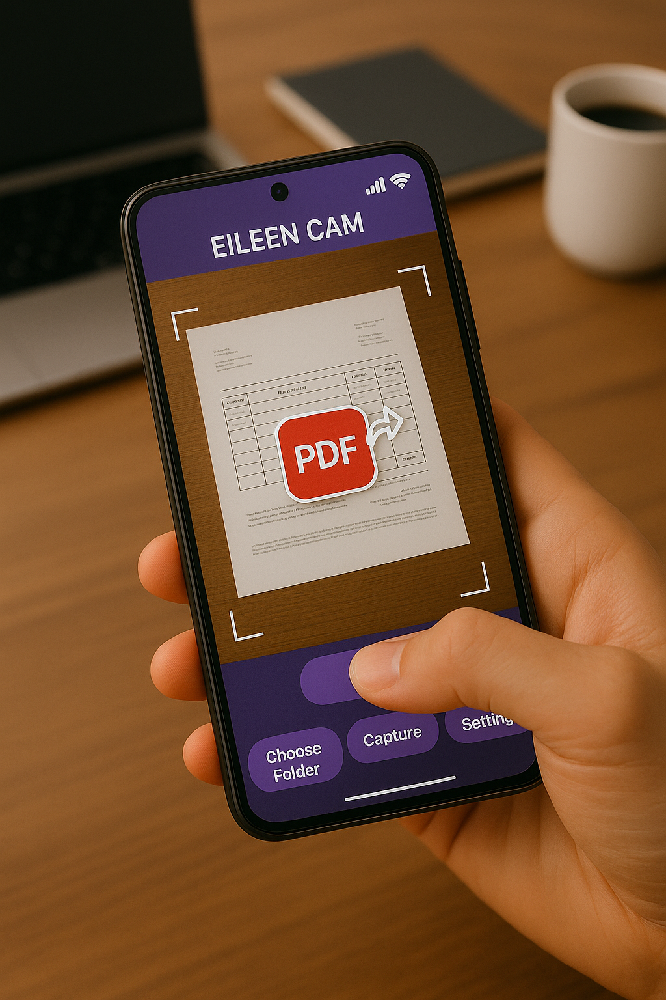
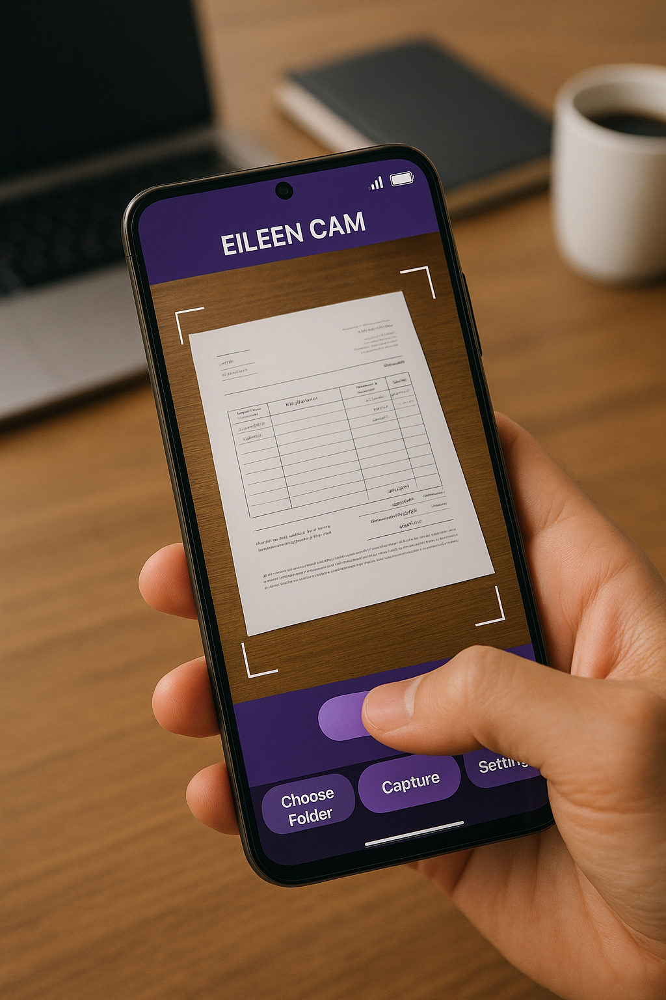
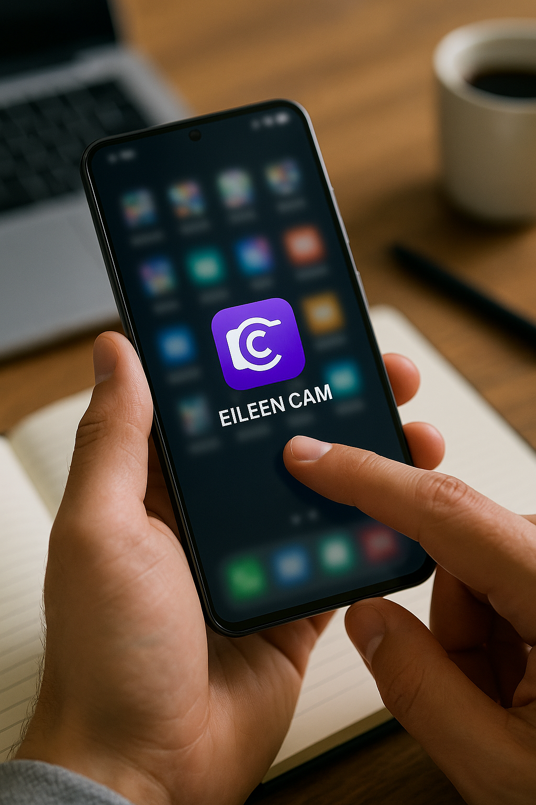
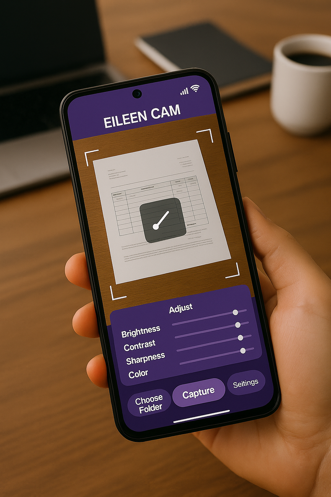
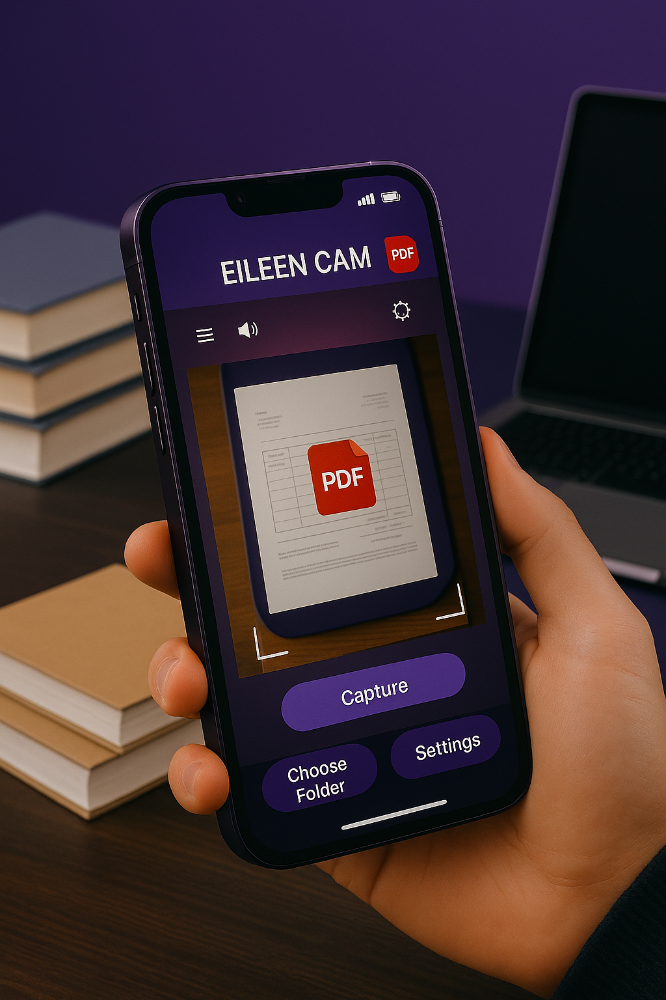
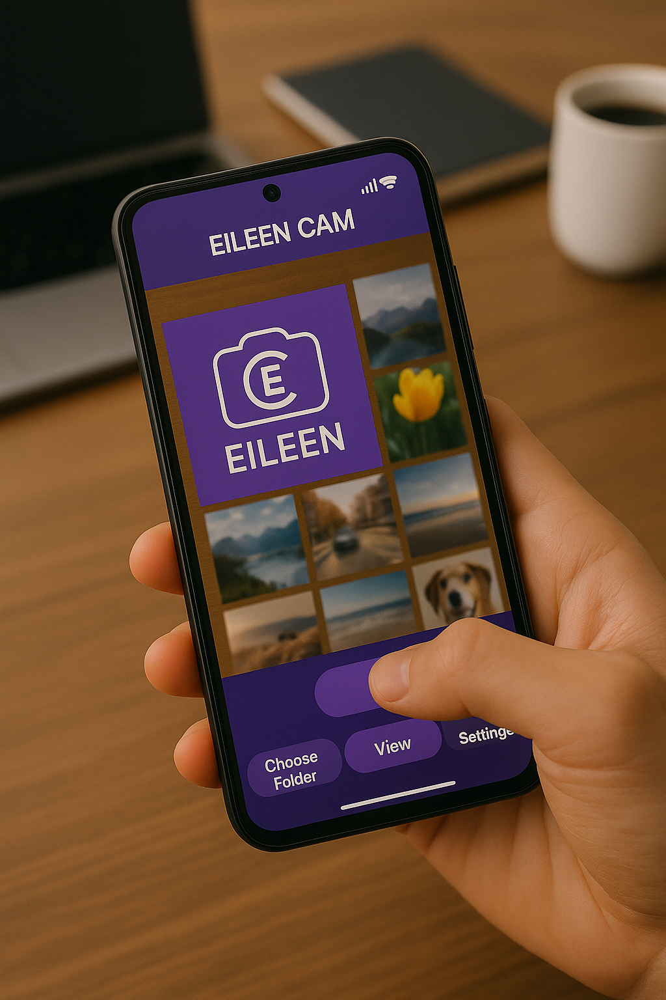
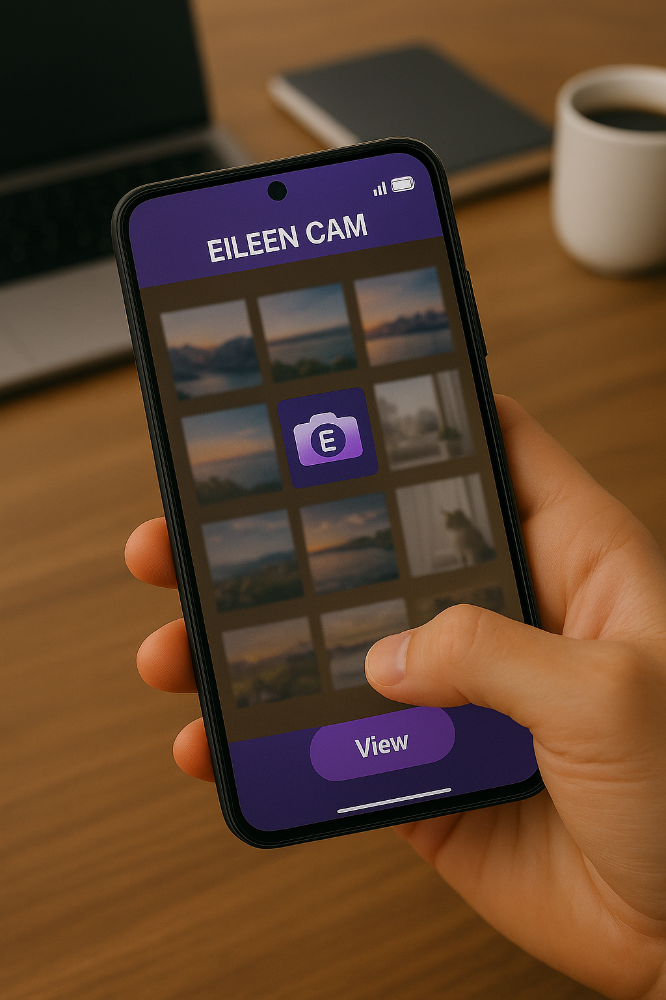
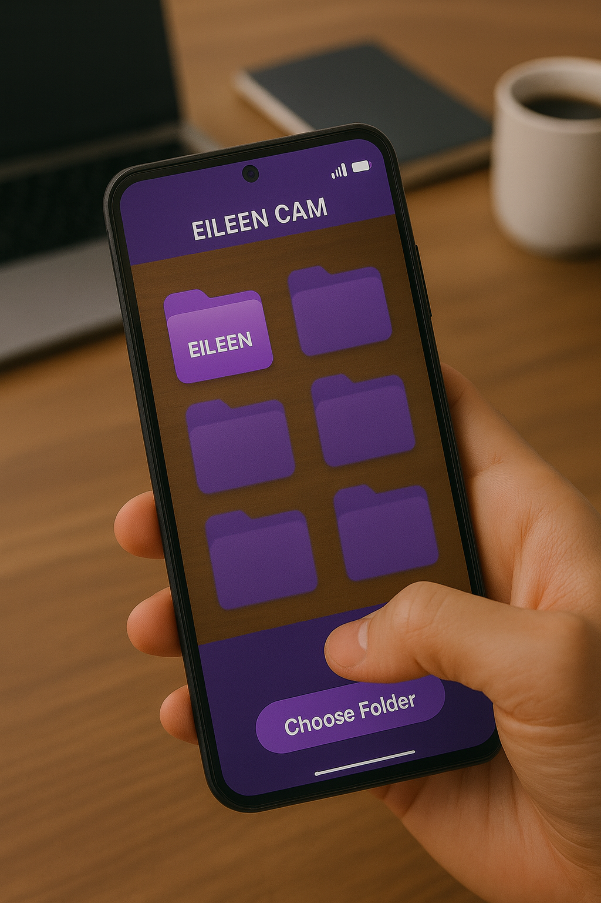
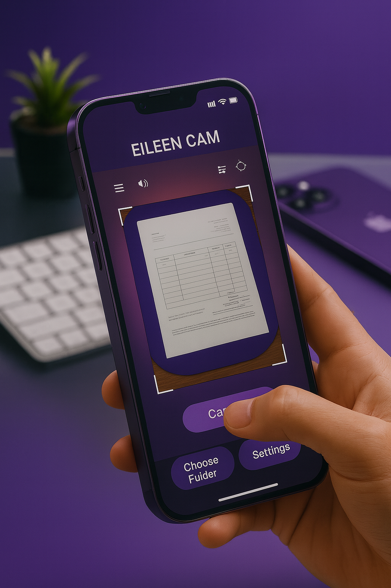

تنزيل مباشر بنفس ألوان التطبيق — دون تسجيل. Direct download, no sign‑up — styled to match the app.
تنزيل الآن (APK) Download Now (APK)








وداعًا للفوضى وتجمّع الصور في مجلد واحد؛ EILEEN CAM لأجلك: نظّم صورك من لحظة التصوير، وحوّلها إلى PDF، واحفظ وشارك بضغطة زر. هذا ما يميّزه عن التطبيقات الأخرى التي تفتقد هذه الميزات.
عربي/إنجليزي حسب لغة الجهاز.
نافذتك المنظّمة لكل صورك: تشاهد المجلدات مع عدد الصور في كل مجلد وبطاقة معاينة تضم أحدث أربع صور، لتصل لما تريد بسرعة.
التطبيق يعمل كقارئ PDF، فتستغني عن تطبيقات القراءة المنفصلة. أثناء فتح ملف PDF يمكنك المشاركة أو الطباعة لجزء محدّد فقط من الملف كميزة فريدة للقارئ: الصفحة الحالية أو نطاق صفحات من رقم إلى رقم مباشرة.